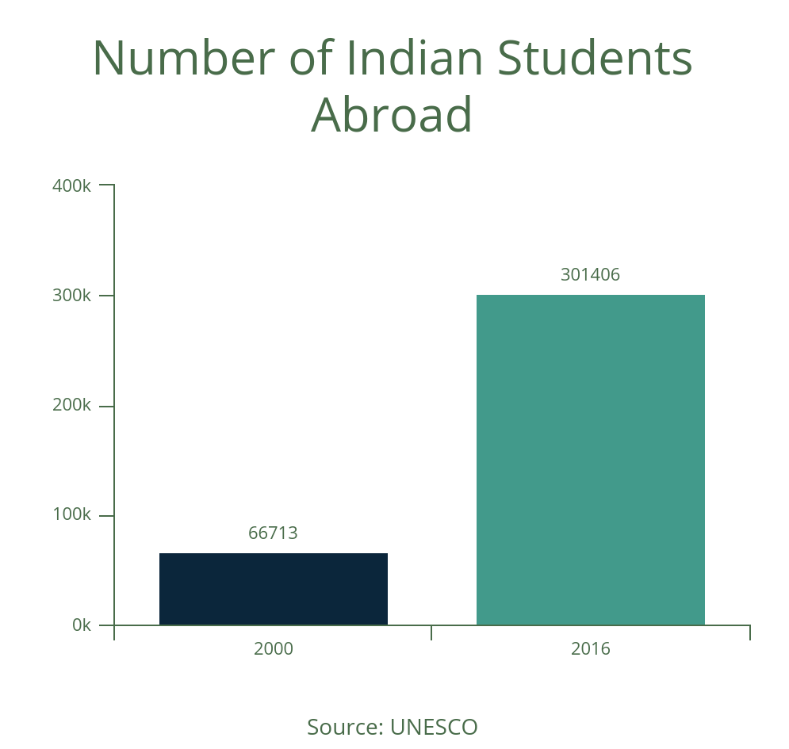

Since independence, there have been a plethora of social and economic facets in India that have failed to evolve with the times. The most obvious one is education. The reasons are many; the major one being the mindset of the general populace.
The education system in India has struggled for a long time. The country is set to be one of the youngest nations in the world by 2030, with around 140 million people in the ‘college education’ age group. The problems with the system are as deep-rooted as any other major socio-economic issue the country is facing. It might take generations, if not decades to rectify.
The inert schooling system
Every level of education in India is riddled with issues. Even though college education seems to be showing micro-improvements by the year, the school system remains stagnant. By being forced to tackle redundant problems instead of being encouraged to develop ideas, students are pushed into a primitive mindset where grades come to the fore. At face value, it makes sense for grades to be a priority as it is a very easy metric to analyze. At the same time, it is immensely naive and inefficient. Grades are just a facade, more often than not. They tend to suppress the talents a student may have, rather than enhancing it, which should be the goal.
Grades are just a facade, more often than not. They tend to suppress the talents a student may have, rather than enhancing it, which should be the goal.
Another major issue is the binary approach the system takes once a student enters high school. They’re often forced, either by parents, teachers or peers into one of the two supposedly ‘Holy Grails’ of the professional field: engineering or medicine. The high school environment in India is one of the most toxic places a student can be in — an environment in which a student is automatically branded as incapable if he or she chooses anything other than those two streams. This trend stems from the deep-rooted flaws of our culture, where the notion that these streams are the only two ways of making money have been drilled into Indian minds.
Post-schooling hell
High school students are screened by the toughest of entrance exams for admissions. Teenagers go through 3 or more years of hell — mostly in coaching centers with study schedules and environments that are borderline Human Rights violations — trying to crack these exams to get into the ‘best’ colleges in India. These coaching centers often end up producing more suicide cases than successful candidates.
These coaching centers often end up producing more suicide cases than successful candidates.
Regardless of the small improvements in college education, research and development takes a back seat in most Indian universities, atleast for undergraduate courses. Instead, the priority tends to shift to an outdated curriculum, with redundant courses still prevailing over modern ones. Training the Indian youth into being efficient work-horses, typically for corporate conglomerates, is what colleges aim at doing.
Brain Drain, in the educational context
The well-known problem of ‘Brain Drain’ is also an indirect reaction to the poor system in the country. The exceptional professionals that the country manages to produce rarely seem to contribute to India, as the environment is not as rewarding as the ones abroad. Migration has not been limited to working professionals, but graduates seeking PG courses as well. The total number of Indian students overseas increased from 66,713 in 2000 to 3,01,406 in 2016, based on data from the UNESCO Institute of Statistics.
These issues have been discussed before, but what they build up to is a bigger problem that has remained dormant so far but can erupt not too far into the future, exposing the lack of innovation within the country.
Why we're running out of time
As a fallout of Industry 4.0, there have been a significant number of jobs replaced by automation. It is not hard to observe why this is a problem for the over-saturated tech industry of India. A good example is how an overwhelming number of college graduates from Indian universities are employed as software testers. What looks like an easy job opportunity right now seems set to become obsolete with exponential improvements in fields like AI. There are countless more examples where AI seems ready to take over. This is not good news, especially for a country with unemployment on the rise. This problem has not been identified on a large scale so far. Indian education faces a race against time, and it hasn’t left the startline yet.
There are countless more examples where AI seems ready to take over. This is not good news, especially for a country with unemployment on the rise.
Claiming that India’s education system needs an overhaul is an understatement. There needs to be a re-imagining right from its roots, a necessary but difficult venture. A good place to start would be the government. Although the HRD Ministry is cabinet-ranked, it is often neglected and the people put in charge are shockingly inept. Government schemes on education have in most cases failed to hit the mark. Free education offered by most government schools comes at a compromise on quality.
The next step would be to improve citizen outlook on the matter. A generational shift may help slightly, but there are more painstaking efforts that need to be taken. These two cogs — government action and societal perception — are the hardest to set in motion, but once done can catalyze the next steps. The system currently in place may not be the worst, but the fastest growing economy in the world needs better, if not the best.